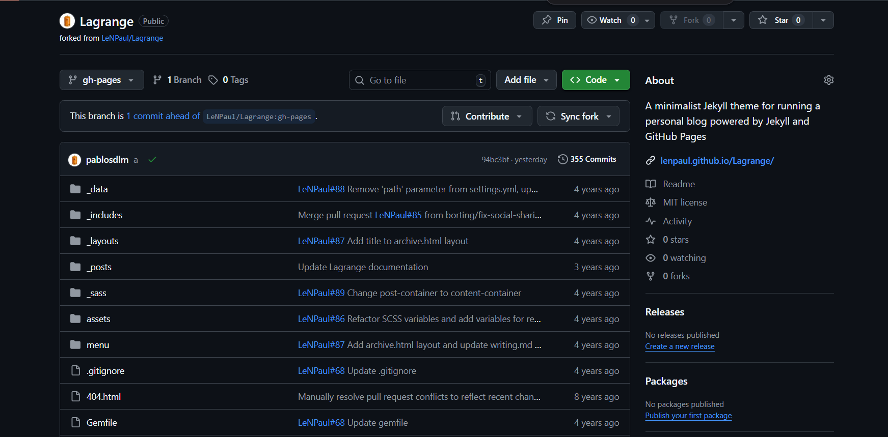
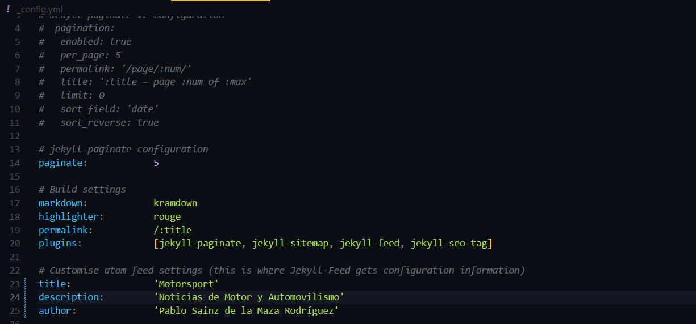
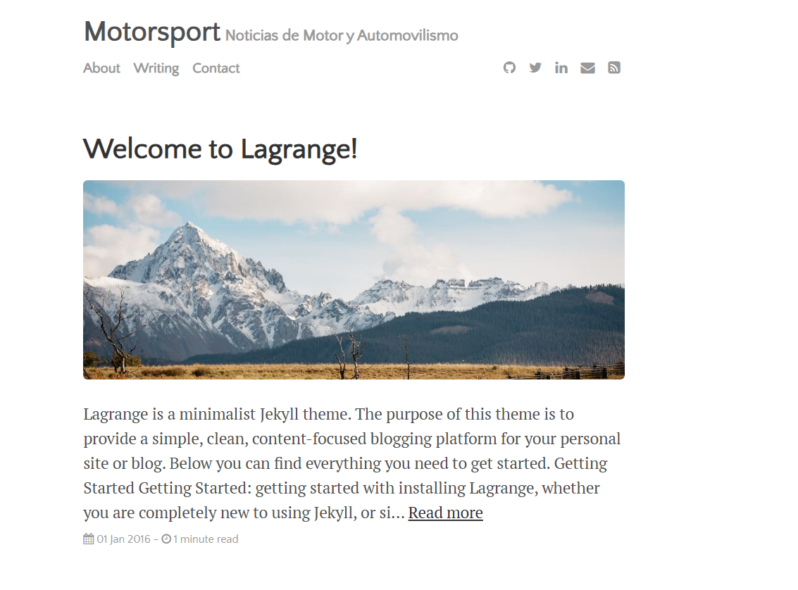
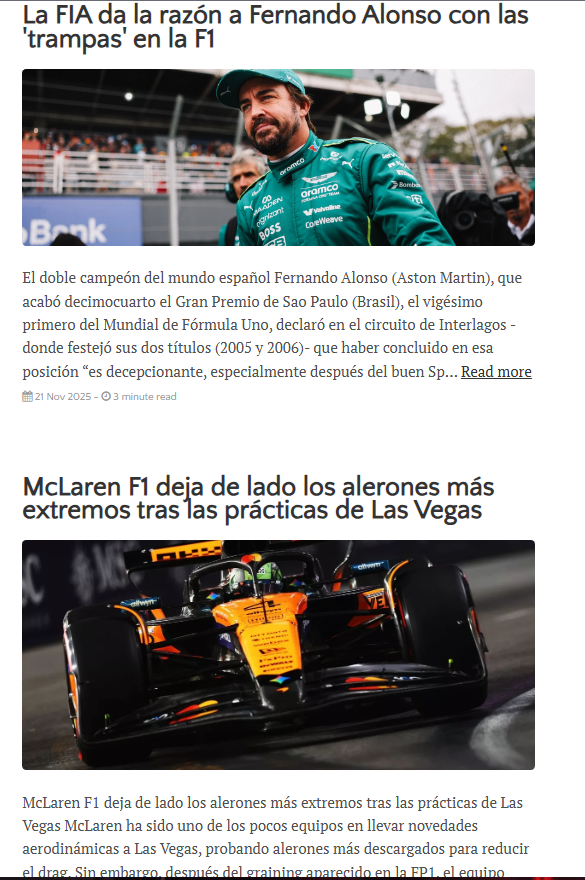
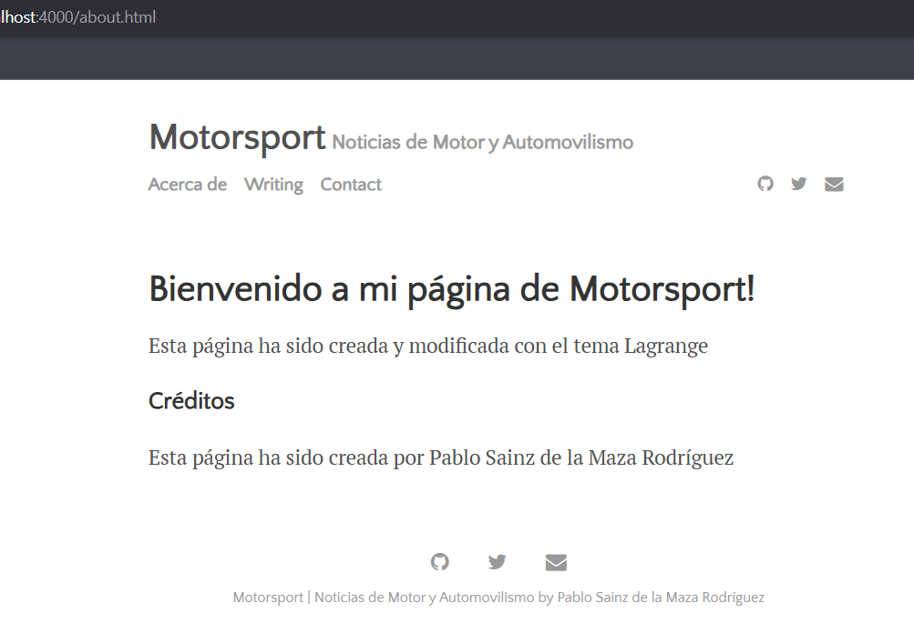

Ejercicio 2: Jekyll con tema Lagrange
1. Importar el tema Lagrange a mi cuenta de Github
Para poder usar el tema Lagrange, debemos ir al repositorio de Github de Lagrange creado por LeNPaul y hacer un fork para poder tener su repositorio en nuestra cuenta de Github. Luego debemos clonar el fork en nuestra máquina virtual usando git clone junto el token para convertirlo en remoto.

2. Configuración principal o Configuración del sitio (_config.yml)
En el fichero _config.yml, tenemos toda la configuración del sitio, como cambiar el título del sitio title; la descripción del sitio description; los plugins que se pueden emplear para modificar el funcionamiento del sitio plugins o el autor del sitio author.

En vista del cliente, el parámetro author se aprecia en la parte inferior del sitio

3. Modificar o añadir posts
En cuanto a los posts, estos se muestran en la página principal. En su archivo de Markdown, siguen la misma estructura (frontmatter) que con el tema minima
Estos posts quedan almacenados en _posts escritos en Markdown o en HTML. El título del archivo debe ser año-mes-dia-titulo-del-post.md, al igual que con el tema minima.

4. Modificación de Acerca de o About me (about.md)
En los sitios web, se suele incluir un apartado sobre la información del sitio o la información del creador de dicho sitio. Esto se edita mediante el archivo about.md en /menu/about.md. Mantiene el mismo frontmatter que el tema minima.
Así se ve about.

5. Finalización
Para subir los cambios a Github Pages, se usarán los siguientes comandos:
git add .
git commit -m
git push origin gh-pages